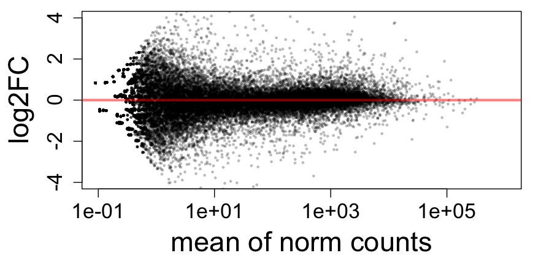
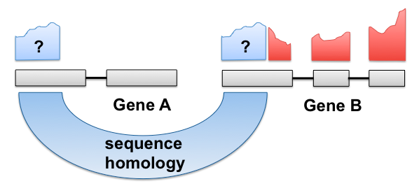
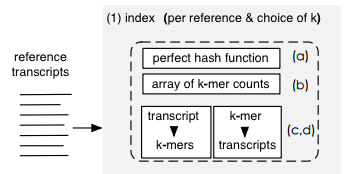
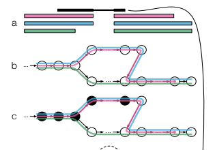
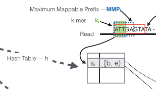
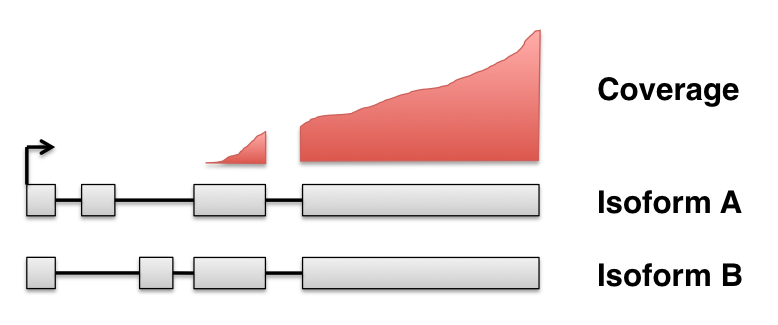
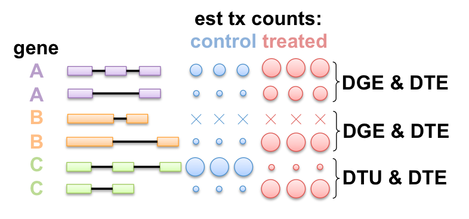

Bioconductor Workflows Following Fast, Lightweight RNA-seq Quantifiers
Michael Love
@mikelove
Bioc2016
June 25, 2016
this talk: http://mikelove.github.io/bioc2016
A typical gene-level RNA-seq pipeline
- Align reads (15-30 min, 2-5 Gb file)
- Count reads in genes (15-30 min)
- Stats packages for inference:
- DESeq2, edgeR, limma-voom, etc.
- Counts of reads: precision of log2FC

Criticisms of the standard count-based pipeline
- Counts scale with feature length Trapnell et al 2013
- Learning bias (e.g. positional) easier if you know the source

Criticisms of the standard count-based pipeline II
- Discards reads that cannot be uniquely assigned to genes Robert & Watson 2015
- In many cases, we can identify the source (or a set of similar sources)

Criticisms of the standard count-based pipeline III
- Generates large intermediate file with exact alignments which you may not need
New, fast transcript quantifiers
- Sailfish, Salmon, kallisto
- Not exact base-by-base alignments
- Rough location of read within a set of txs
- Few min / file, small memory req'd
- Output relative abundance per tx
  
Using with gene DE
http://bioconductor.org/packages/tximport & F1000Research
- Sum transcript-level estimated counts to gene-level
- Collapse isoform uncertainty
- Probabilistically assign (genomic) multimapping reads, increase sensitivity

Using with gene DE
- Calculate an offset that accounts for changes in average transcript length across samples
\[ \textrm{ATL}_{gs} \equiv \sum_{i \in g} \theta_{is} \bar{l}_{is}, \quad \sum_{i \in g} \theta_{is} = 1 \]
sample .............................. \(s\)
gene ................................... \(g\)
isoform ............................. \(i\)
effective length ............ \(\bar{l}\)
percent abundance ... \(\theta\)
Gene-level and tx-level complementary

Packages for DTE: cuffdiff, BitSeq, EBSeq, sleuth (w/ kallisto), ...
Packages for DEU/DTU: DEXSeq, cuffdiff, MISO, diffSplice, rMATS, ...
Ex: Roadmap tissues
Run Salmon on 37 FASTQ: ~4 min / file
# 25 seconds to import and summarize
txi <- tximport(files, type="salmon", tx2gene=tx2gene, reader=read_tsv)
# build DESeq2 object
dds <- DESeqDataSetFromTximport(txi, samples, ~tissue)
# 4 seconds to variance stabilize
vsd <- vst(dds)
# exploratory data analysis
plotPCA(vsd, "tissue")
# differential expression
dds <- DESeq(dds)
res <- results(dds)
Ex: Roadmap tissues


What's next
tximportMetawrappingtximport- Should tell us about samples, transcriptome, what software was used, what options
This work in collaboration with
- Charlotte Soneson @CSoneson (UZH)
- Mark Robinson @markrobinsonca (UZH)
- Soneson, C., Love, M.I., Robinson, M.D. Differential analyses for RNA-seq: transcript-level estimates improve gene-level inferences. F1000Research, Dec 2015.
Support from
- Rafael Irizarry @rafalab (DFCI & HSPH)
- NIH Cancer Training Grant